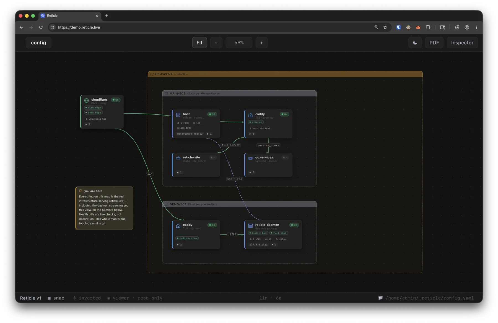

Current picture
Topology, dependencies, configured notes, health, and observation times stay together.
Reticle keeps topology, health, dependencies, and freshness in one live picture for the team, before anyone touches production.
Runs on your own infrastructure from a local YAML configuration. One daemon serves one topology with unlimited browser seats.
Viewers can inspect and export the live graph, but cannot edit topology, see command text, or run actions.

A real Team viewer session. Read-only access is enforced by the daemon, not just hidden in the browser.
The browser, API, and agents can inspect current context without gaining shell or named-action access.
Topology, dependencies, configured notes, health, and observation times stay together.
The browser and JSON API use shared viewer and editor tokens, not individual identities.
Agents inspect the graph with no command, shell, save, or named-action execution.
Agents inspect; operators decide. Optional chat follows the same read-only boundary.
Keep topology, evidence, and action context together so responders form a shared picture sooner.
See what is connected, unhealthy, and stale without reconstructing the system during an incident.
Keep evidence, preconditions, and named actions together to improve time to safe next action and failed-deployment recovery time.
Optionally record selected privileged activity and named-action outcomes as JSONL.
| Capability | Desktop | Team Daemon |
|---|---|---|
| Deployment | Standalone, local-only app | Always-on daemon on your infrastructure |
| Access | One local operator | Unlimited browser seats |
| Identity | Local OS user | Shared editor/viewer bearer tokens; SSO is not included |
| Topology scope | Multiple local workspaces | One topology per licensed daemon |
| UI and integrations | Local UI; loopback JSON API; read-only MCP | Browser UI; authenticated JSON API; read-only MCP |
| Checks | Fixed checks; optional privileged commands | Fixed checks; gated custom commands |
| Shell | Local privileged shell available | No Team shell |
| Audit logs | Not a shared service | JSONL when --audit-log is configured |
| License | Free, MIT | Commercial subscription |
Fixed HTTP and read-only SSH checks remain the default. Custom remote SSH or local Bash checks run only when the operator enables them.
Start the daemon with --allow-custom-commands.
Editors manage definitions. New checks are enabled and viewer-visible by default; named actions require approval by default. Direct YAML writers are trusted operators.
Reticle validates definitions, limits output, and applies timeouts. OS or server controls are still required for guaranteed termination.
Use restricted SSH principals and a dedicated, least-privileged daemon OS account. Viewers receive bounded results, never command text or execution controls.
Reticle provides operational context, not a remote shell.
Limit the daemon account, filesystem, environment, network reach, and SSH principals to what checks require.
Clients invoke persisted actions by ID, revision, and approval decision, never by supplying command text.
The browser, JSON API, MCP, and chat expose no interactive or ad-hoc command interface.
Optional JSONL logging records selected connection, privileged-request, save-failure, and named-action events. It omits command text and output; records may include addresses, IDs, revisions, decisions, and errors. Protect and rotate the log.
Each subscription covers one running daemon and one topology. Access uses shared viewer and editor tokens; SSO and individual attribution are not included.
$199/month
Per running Team Daemon, billed monthly.
$1,999/year
Per running Team Daemon, billed annually.
$3,000one-time
White-glove install and mapping starts at $3,000 one-time, scoped to your environment.
We reply within one business day. Card, ACH, or bank transfer.
Before production use, confirm TLS, token rotation, least-privilege access, audit-log handling, topology backups, support expectations, and any required SLA.
Starting at $3,000, we help deploy the daemon, configure TLS and authentication, establish least-privilege access, and map the agreed initial production scope.
No default SLA is published. Support, updates, security review, and SLA requirements must be agreed before production adoption.
No. Desktop is free and MIT-licensed; Team Daemon is commercial subscription software.
Run Team Daemon yourself, or engage us to deploy it and map your first production scope.